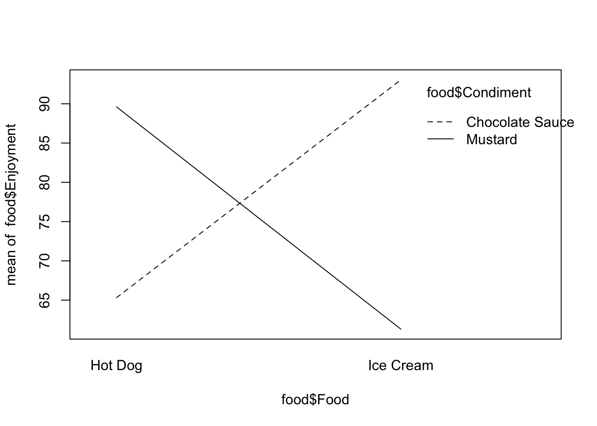
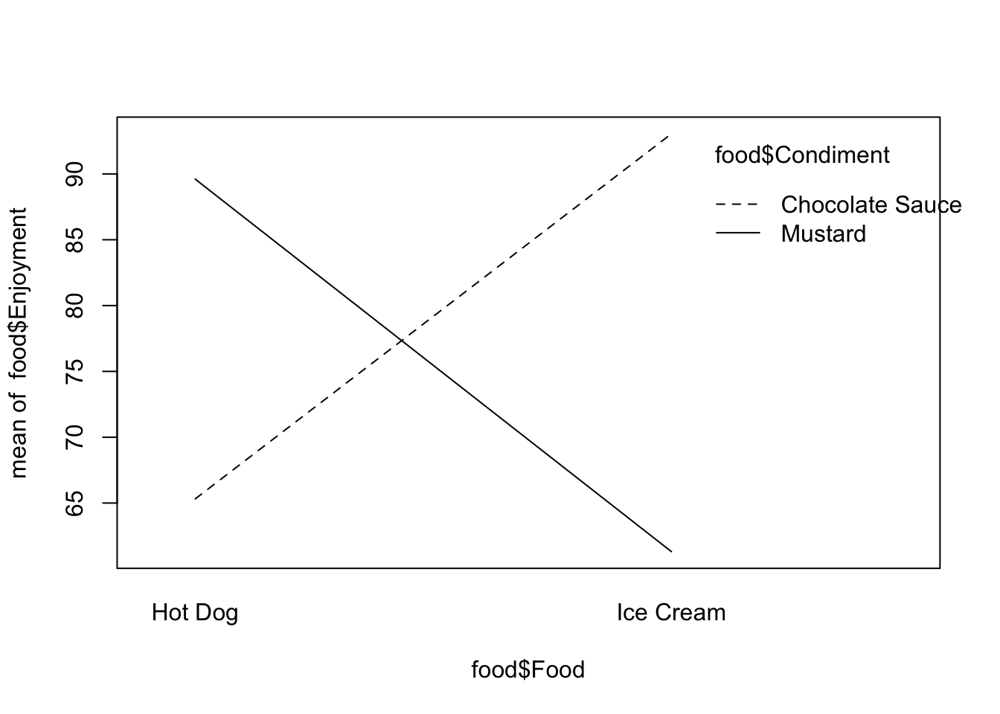
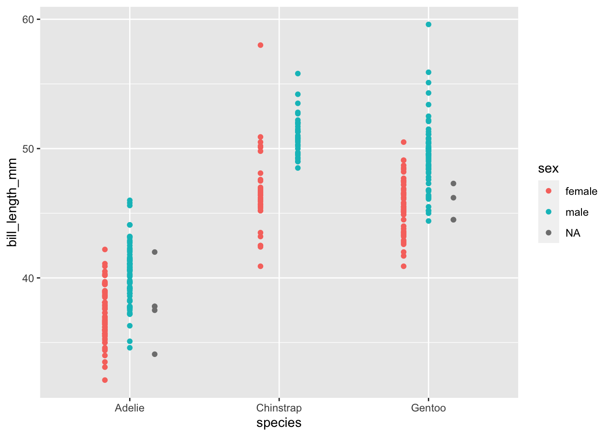

Chapter 5 ANOVA
5.1 Comparing multiple groups in a single variable
In the last section we looked at using the linear model to compare two groups, in this section we’ll look at using it to compare more than two. One thing to note is that we’re still working with only one explanatory variable, the groups we are talking about are basically different values that the one variable can take. In the PlantGrowth data the variable is called group and the values it takes are ctrl, trt1 and trt2.
TODO GLOSSARY EXPLANATORY VARIABLE, GROUPS LEVELS, FACTOR
You’ll be pleased to know this is where the pay off comes. Any number of groups is no more complicated than the two we’ve already done.
We can visualise the process as simply being a case where we have more than one line to examine.

And putting that in a linear model is no different than before because we have only one variable.
##
## Call:
## lm(formula = weight ~ group, data = PlantGrowth)
##
## Residuals:
## Min 1Q Median 3Q Max
## -1.0710 -0.4180 -0.0060 0.2627 1.3690
##
## Coefficients:
## Estimate Std. Error t value Pr(>|t|)
## (Intercept) 5.0320 0.1971 25.527 <2e-16 ***
## grouptrt1 -0.3710 0.2788 -1.331 0.1944
## grouptrt2 0.4940 0.2788 1.772 0.0877 .
## ---
## Signif. codes: 0 '***' 0.001 '**' 0.01 '*' 0.05 '.' 0.1 ' ' 1
##
## Residual standard error: 0.6234 on 27 degrees of freedom
## Multiple R-squared: 0.2641, Adjusted R-squared: 0.2096
## F-statistic: 4.846 on 2 and 27 DF, p-value: 0.01591Great! so we handle the extra cases nearly perfectly. There are two lines of coefficient results, the first showing the gradient between the ctrl and trt1 and the second showing the gradient between ctrl and trt2. The ctrl data has clearly been used as a common reference - this is the default design in the function, the first group in the data becomes the common reference. Here we get away with it, as we do want the first level to be the common reference. When you need to change the order, you can set the reference level explicitly.
df <- PlantGrowth
df$group<- relevel(df$group, ref="trt2")
model2 <- lm(weight ~ group , data = df,)
summary(model2)##
## Call:
## lm(formula = weight ~ group, data = df)
##
## Residuals:
## Min 1Q Median 3Q Max
## -1.0710 -0.4180 -0.0060 0.2627 1.3690
##
## Coefficients:
## Estimate Std. Error t value Pr(>|t|)
## (Intercept) 5.5260 0.1971 28.032 < 2e-16 ***
## groupctrl -0.4940 0.2788 -1.772 0.08768 .
## grouptrt1 -0.8650 0.2788 -3.103 0.00446 **
## ---
## Signif. codes: 0 '***' 0.001 '**' 0.01 '*' 0.05 '.' 0.1 ' ' 1
##
## Residual standard error: 0.6234 on 27 degrees of freedom
## Multiple R-squared: 0.2641, Adjusted R-squared: 0.2096
## F-statistic: 4.846 on 2 and 27 DF, p-value: 0.01591And now we see the trt2 as common reference against the ctrl and trt1 groups.
In these data ctrl vs trt1 appears to be significant according to the linear model model1 and trt1 vs trt2 appears to be significant according to the linear model model2 but we did need to create two models to do this. If this seems longwinded or illogical, then that’s fair. The two models have the same data and specification so should have the same results in - it was really just the way we were ordering things in the data that was different. The real problem is that the models are rich and not all the comparisons that can be done with them can easily be written in summary(model). To get around this an analysis technique for getting specific comparisions (or contrasts in the statistics jargon) from linear models has been invented, that technique is called ANOVA (Analysis of Variance).
5.1.1 One-Way Comparisons
When we want to do comparisons between groups in a linear model we need to use ANOVA. Now that we have a solid way of thinking about contrasts as the slope between the categories, we can think of ANOVA as a tool for pulling out the significances in the best way. All we have to do is learn how to specify the contrasts for ANOVA.
Every time we do ANOVA we need a model to feed into it. Here’s the most common way ANOVA is done in R, with the aov() and TukeyHSD() functions, you’ve probably seen this before.
## Tukey multiple comparisons of means
## 95% family-wise confidence level
##
## Fit: aov(formula = model)
##
## $group
## diff lwr upr p adj
## trt1-ctrl -0.371 -1.0622161 0.3202161 0.3908711
## trt2-ctrl 0.494 -0.1972161 1.1852161 0.1979960
## trt2-trt1 0.865 0.1737839 1.5562161 0.0120064Which is limited and applies only when the standard assumptions of ANOVA are met.
A better alternative is the multcomp package function glht() (general linear model hypothesis test), which is more flexible with respect to which designs and contrasts you can get out, at the expense of being a little more complicated.
The linfct option just takes a specification of the things to be tested, and the mcp() function generates the comparison based on a text description, here that the variable group should be analysed by ‘Tukey’.
##
## Simultaneous Tests for General Linear Hypotheses
##
## Multiple Comparisons of Means: Tukey Contrasts
##
##
## Fit: lm(formula = weight ~ group, data = PlantGrowth)
##
## Linear Hypotheses:
## Estimate Std. Error t value Pr(>|t|)
## trt1 - ctrl == 0 -0.3710 0.2788 -1.331 0.3909
## trt2 - ctrl == 0 0.4940 0.2788 1.772 0.1980
## trt2 - trt1 == 0 0.8650 0.2788 3.103 0.0121 *
## ---
## Signif. codes: 0 '***' 0.001 '**' 0.01 '*' 0.05 '.' 0.1 ' ' 1
## (Adjusted p values reported -- single-step method)By printing the summary we see the contrast hypotheses writ explicitly (e.g. the difference between ctrl and trt1 is 0) and the conclusions: there is no evidence to suggest either treatment is different from the control, but the difference we observe between the group1 and group2 occurs by chance only about 1.2 percent of the time.
5.2 Comparing groups in multiple variables
5.2.1 Two-Way Comparisons
library(palmerpenguins)
ggplot(penguins) + aes(species, bill_length_mm) + geom_jitter(aes(colour = sex), position = position_dodge(width = 0.5))## Warning: Removed 2 rows containing missing values (geom_point).
##
## Call:
## lm(formula = bill_length_mm ~ species + sex, data = penguins)
##
## Residuals:
## Min 1Q Median 3Q Max
## -6.0869 -1.3770 -0.0709 1.2254 11.0131
##
## Coefficients:
## Estimate Std. Error t value Pr(>|t|)
## (Intercept) 36.9770 0.2307 160.25 <2e-16 ***
## speciesChinstrap 10.0099 0.3413 29.33 <2e-16 ***
## speciesGentoo 8.6975 0.2871 30.29 <2e-16 ***
## sexmale 3.6939 0.2548 14.50 <2e-16 ***
## ---
## Signif. codes: 0 '***' 0.001 '**' 0.01 '*' 0.05 '.' 0.1 ' ' 1
##
## Residual standard error: 2.325 on 329 degrees of freedom
## (11 observations deleted due to missingness)
## Multiple R-squared: 0.8209, Adjusted R-squared: 0.8193
## F-statistic: 502.8 on 3 and 329 DF, p-value: < 2.2e-16# setup comparisons explicitly
comps <- mcp( species = c("Chinstrap - Gentoo = 0",
"Chinstrap - Adelie = 0"
),
sex = c("male - female = 0")
)
summary(glht(model, linfct = comps))##
## Simultaneous Tests for General Linear Hypotheses
##
## Multiple Comparisons of Means: User-defined Contrasts
##
##
## Fit: lm(formula = bill_length_mm ~ species + sex, data = penguins)
##
## Linear Hypotheses:
## Estimate Std. Error t value Pr(>|t|)
## species: Chinstrap - Gentoo == 0 1.3123 0.3534 3.713 0.000688 ***
## species: Chinstrap - Adelie == 0 10.0099 0.3413 29.329 < 1e-04 ***
## sex: male - female == 0 3.6939 0.2548 14.497 < 1e-04 ***
## ---
## Signif. codes: 0 '***' 0.001 '**' 0.01 '*' 0.05 '.' 0.1 ' ' 1
## (Adjusted p values reported -- single-step method)## or steal from individual comparisons...
sex_comps <- glht(model, mcp(sex = "Tukey"))$linfct
species_comps <- glht(model, mcp(species = "Tukey"))$linfct
comps <- rbind(sex_comps, species_comps)
summary(glht(model, linfct = comps))##
## Simultaneous Tests for General Linear Hypotheses
##
## Fit: lm(formula = bill_length_mm ~ species + sex, data = penguins)
##
## Linear Hypotheses:
## Estimate Std. Error t value Pr(>|t|)
## male - female == 0 3.6939 0.2548 14.497 < 1e-04 ***
## Chinstrap - Adelie == 0 10.0099 0.3413 29.329 < 1e-04 ***
## Gentoo - Adelie == 0 8.6975 0.2871 30.293 < 1e-04 ***
## Gentoo - Chinstrap == 0 -1.3123 0.3534 -3.713 0.000926 ***
## ---
## Signif. codes: 0 '***' 0.001 '**' 0.01 '*' 0.05 '.' 0.1 ' ' 1
## (Adjusted p values reported -- single-step method)5.3 interactions of variables - synergistic effects
line is visualised as … blah blah
##
## Call:
## lm(formula = bill_length_mm ~ species + sex + species:sex, data = penguins)
##
## Residuals:
## Min 1Q Median 3Q Max
## -5.7904 -1.3735 -0.0638 1.2096 11.4265
##
## Coefficients:
## Estimate Std. Error t value Pr(>|t|)
## (Intercept) 37.2575 0.2710 137.473 < 2e-16 ***
## speciesChinstrap 9.3160 0.4808 19.377 < 2e-16 ***
## speciesGentoo 8.3063 0.4073 20.393 < 2e-16 ***
## sexmale 3.1329 0.3833 8.174 6.64e-15 ***
## speciesChinstrap:sexmale 1.3877 0.6799 2.041 0.0421 *
## speciesGentoo:sexmale 0.7771 0.5721 1.358 0.1753
## ---
## Signif. codes: 0 '***' 0.001 '**' 0.01 '*' 0.05 '.' 0.1 ' ' 1
##
## Residual standard error: 2.316 on 327 degrees of freedom
## (11 observations deleted due to missingness)
## Multiple R-squared: 0.8234, Adjusted R-squared: 0.8207
## F-statistic: 305 on 5 and 327 DF, p-value: < 2.2e-16# setup comparisons explicitly
# comps <- mcp( species = c("Chinstrap - Gentoo = 0",
# "Chinstrap - Adelie = 0"
# ),
# sex = c("male - female = 0"),
# species:sex = c("Chinstrap-male - Gentoo-female")
# )
#summary(glht(model2, linfct = comps))
library(dplyr)
penguins %>% mutate(double = if_else(sex == 'male' & species == 'Chinstrap', "male_Chinstrap", "other")) %>%
ggplot() +
aes(species, bill_length_mm) + geom_jitter(aes(colour = sex), position = position_dodge(width = 0.5)) + facet_wrap(~ double)## Warning: Removed 2 rows containing missing values (geom_point).
supplement = rep(c("Formula X1","Formula X2"), 16)
compost = rep(c("John Innes #1", "John Innes #2", "John Innes #2", "John Innes #1"), 8)
size = rep(runif(32))
df <- tibble::tibble(
supplement = supplement,
compost = compost,
size = size
) %>%
mutate(size = if_else( (supplement == "Formula X1" & compost == "John Innes #2"), (size + 1), size) )
df %>% filter(supplement == "Formula X1", compost == "John Innes #2")## # A tibble: 8 x 3
## supplement compost size
## <chr> <chr> <dbl>
## 1 Formula X1 John Innes #2 1.92
## 2 Formula X1 John Innes #2 1.53
## 3 Formula X1 John Innes #2 1.14
## 4 Formula X1 John Innes #2 1.07
## 5 Formula X1 John Innes #2 1.90
## 6 Formula X1 John Innes #2 1.62
## 7 Formula X1 John Innes #2 1.15
## 8 Formula X1 John Innes #2 1.87df %>%
ggplot() + aes(compost, size) + geom_point(aes(colour = supplement), position = position_dodge(width = 0.5))
#mod <- lm(new_val ~ var1 + var2 + var1*var2, data = df)
#summary(mod)
#summary(glht(model, linfct = mcp(var1 = "Tukey")))
#contrasts(as.factor(df$var1))## Parsed with column specification:
## cols(
## Enjoyment = col_double(),
## Food = col_character(),
## Condiment = col_character()
## )## `geom_smooth()` using formula 'y ~ x'
## `geom_smooth()` using formula 'y ~ x'##
## Call:
## lm(formula = Enjoyment ~ Condiment, data = food)
##
## Residuals:
## Min 1Q Median 3Q Max
## -23.1480 -14.3140 0.6796 13.3480 27.1631
##
## Coefficients:
## Estimate Std. Error t value Pr(>|t|)
## (Intercept) 79.182 2.375 33.336 <2e-16 ***
## CondimentMustard -3.725 3.359 -1.109 0.271
## ---
## Signif. codes: 0 '***' 0.001 '**' 0.01 '*' 0.05 '.' 0.1 ' ' 1
##
## Residual standard error: 15.02 on 78 degrees of freedom
## Multiple R-squared: 0.01552, Adjusted R-squared: 0.0029
## F-statistic: 1.23 on 1 and 78 DF, p-value: 0.2709## Named num [1:80] 75.5 75.5 75.5 75.5 75.5 ...
## - attr(*, "names")= chr [1:80] "1" "2" "3" "4" ... 

food %>%
mutate(food_num = if_else( Food == "Hot Dog", 1, 2) ) %>%
ggplot() + aes(Food, Enjoyment) +
geom_jitter( aes(colour = Condiment)) +
geom_smooth(
aes(x = food_num, y = Enjoyment, colour = Condiment),
method = lm
) + theme_minimal()## `geom_smooth()` using formula 'y ~ x'
5.4 Summary
That’s all we need to do to perform ANOVAs with linear models - which always use linear models anyway.